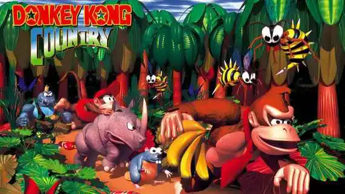

Donkey Kong Country
Description
Donkey Kong Country est un jeu de plateforme révolutionnaire qui a marqué l'histoire des jeux vidéo. Avec ses graphismes en 3D pré-rendus impressionnants pour l'époque, son gameplay précis et sa bande-son mémorable, le jeu suit Donkey Kong et Diddy Kong dans leur quête pour récupérer leur réserve de bananes volée.
Caractéristiques
- Graphismes innovants
- Gameplay précis
- Duo de personnages
- Niveaux variés
- Musique mémorable
Bande-annonce

Liens utiles
Avis des joueurs
4.7
Basé sur 15,300 avis